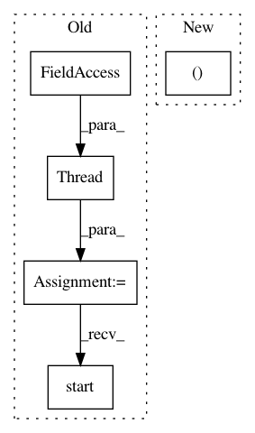

b6dfa65bcc12dd78637838d0943c4c6e1221258b,parlai/mturk/core/socket_manager.py,SocketManager,open_channel,#SocketManager#Any#Any#,519
Before Change
time.sleep(shared_utils.THREAD_SHORT_SLEEP)
// Setup and run the channel sending thread
self.threads[connection_id] = threading.Thread(
target=channel_thread,
name="Socket-Queue-{}".format(connection_id)
)
self.threads[connection_id].daemon = True
self.threads[connection_id].start()
def close_channel(self, connection_id):
Closes a channel by connection_id
shared_utils.print_and_log(
After Change
self.last_sent_heartbeat_time[connection_id] = 0
self.pongs_without_heartbeat[connection_id] = 0
self.last_received_heartbeat[connection_id] = None
self.worker_assign_ids[connection_id] = (worker_id, assignment_id)
def close_channel(self, connection_id):
Closes a channel by connection_id
shared_utils.print_and_log(
In pattern: SUPERPATTERN
Frequency: 3
Non-data size: 5
Instances
Project Name: facebookresearch/ParlAI
Commit Name: b6dfa65bcc12dd78637838d0943c4c6e1221258b
Time: 2018-10-15
Author: jju@fb.com
File Name: parlai/mturk/core/socket_manager.py
Class Name: SocketManager
Method Name: open_channel
Project Name: horovod/horovod
Commit Name: 4f1bf48cb44718a2e401a4bb5434cd3e29dc9aa3
Time: 2020-04-15
Author: github@enrico.minack.dev
File Name: horovod/run/common/util/safe_shell_exec.py
Class Name:
Method Name: execute
Project Name: hyperdashio/hyperdash-sdk-py
Commit Name: f11bb1ef1321e9525fd92de72b2e8a78af24cf17
Time: 2017-07-16
Author: richardartoul@gmail.com
File Name: hyperdash/hyper_dash.py
Class Name: HyperDash
Method Name: run_http